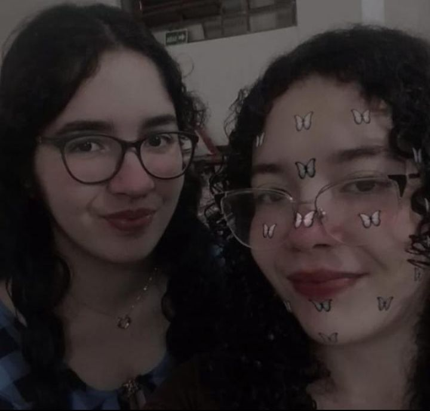
(Eu sou a do lado esquedo)
Meu nome é Renata, tenho 18 anos, moro em São Paulo e atualmente sou estudante de Front-end.
estou aprendendo muitas coisas novas e interessante. No começo é dificil mas depois que pega o jeito fica muito divertido.
Meus colegas são muitos gentis, uns ajudam aos outros em momentos de dúvida e dificuldade.
O professor também é uma pessoa muito bacana, está sempre ajudando um aluno quando da erro em algo ou não entendeu direito.
Também não se incomoda em ter que repetir uma fala porque alguém não entendeu ou acabou chegando mais tarde na aula.
Confesso que fiquei bastante supresa porque esperava que ia ser um professor muito sério, e rigido.
Fico feliz por estar enganada, porque tem aqueles momentos descontraidos, momentos de brincadeiras, então as aulas nunca ficam chatas ou desgastantes.
Possuo alguns hobbys, que são desenhar, jogar, assistir animes e ler mangás ou livros.
Desenhar é uma coisa que sempre gostei desde criança. Com o passar do tempo eu aprimorei, estudei sobre e ainda treino nas horas vagas.
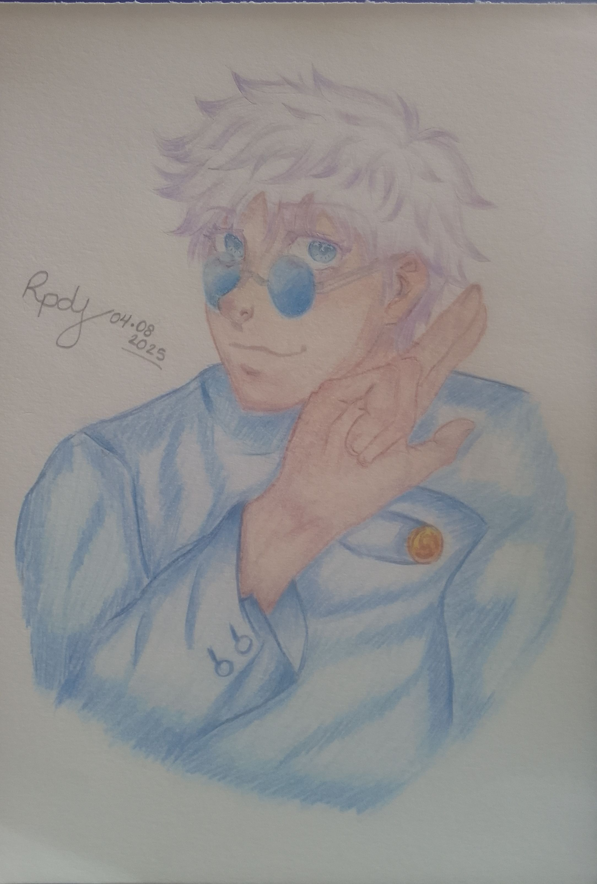
Esse desenho foi um dos mais recentes que fiz, queria tentar um estilo diferente.
Obs: As assinaturas em cada desenho pode estar diferentes, porque ainda estou pensando em criar um nome ou simplismente deixar meu nome original.
![três personagens, o primeiro está do lado esquerdo, é um menino
de cabelos curtos da cor loira, com um chapéu azul com oculos, apoiada na cabeça. Está de
braços cruzados olhando sério pra cima, suas vestes são da cor azul. Ao lado dele tem um
menino sorridente, com uma blusa regata da cor azul, cabelos lisos e curtos da cor preta,
com um chapéu de palha atrás dele, usa shorts da cor verde, e está com os dois braços
dois braços envolta das pernas, ele está sentado. E por último, o terceiro garoto, de cabelos
lisos, curtos, da cor preta, com uma expressão serena e um leve sorrisso enquanto olha pra cima.
Os três estão com curativos no rosto.](ASL.jpg)
Nesse eu desenhei o Sabo, Luffy e Ace quando era crianças. Desenhei em aula vaga.
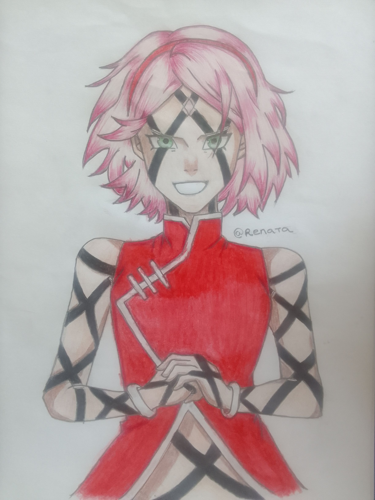
O da Sakura é dos não tão recentes, mas eu gostei muito do resultado dele porque no tempo que desenhei, eu não sabia aplicar as cores direito, não sabia colorir. Fiquei até com medo de estragar o desenho rsrs, mas no fim eu gostei muito do resultado, já que antes dele eu tinha feito outro do mesmo, mas não ficou tão bom assim.
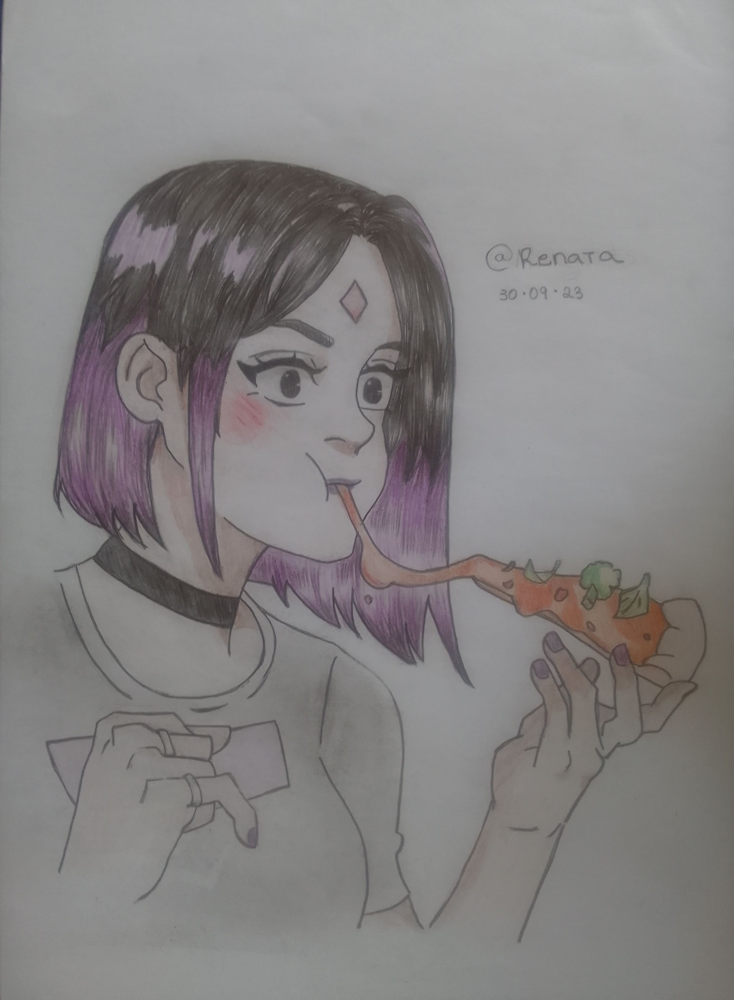
Um desenho da Ravena comendo pizza (-3-).
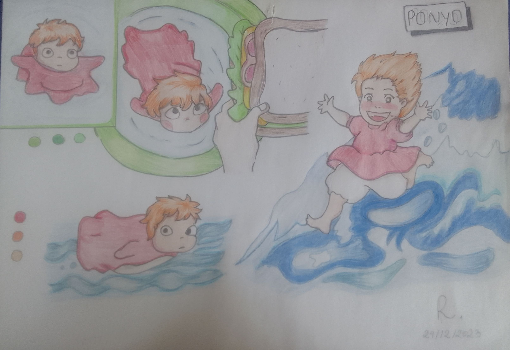
Fiz depois de assistir o filme.
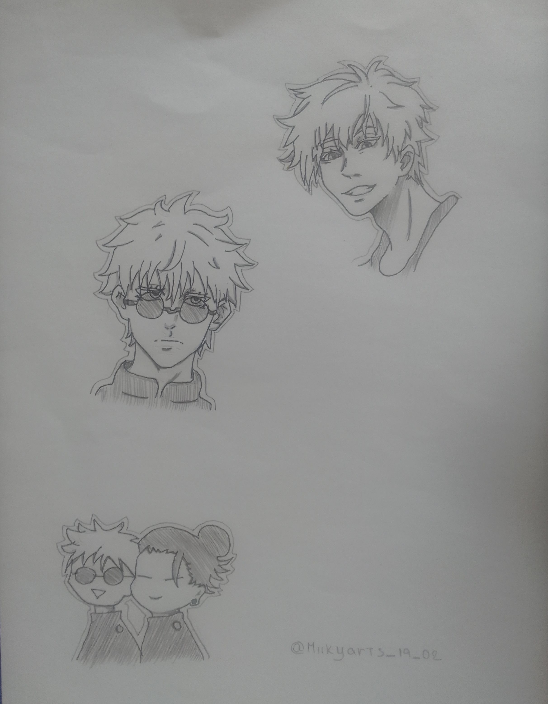
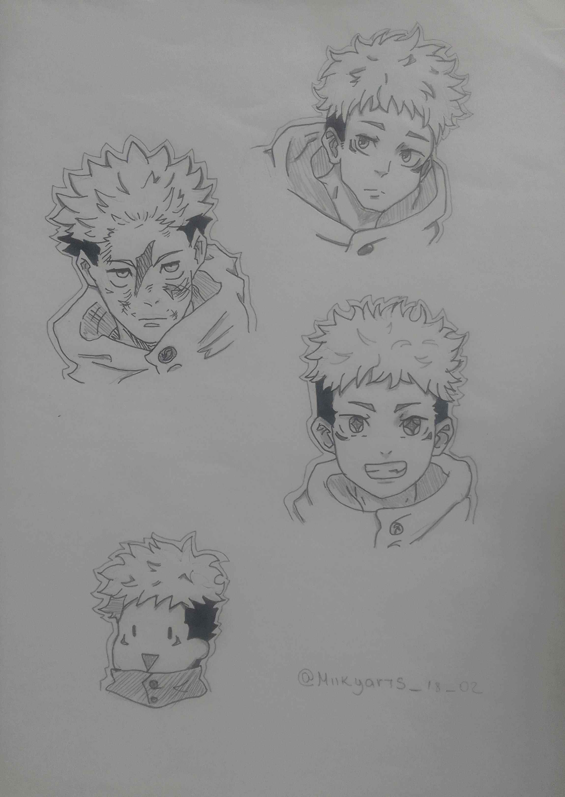
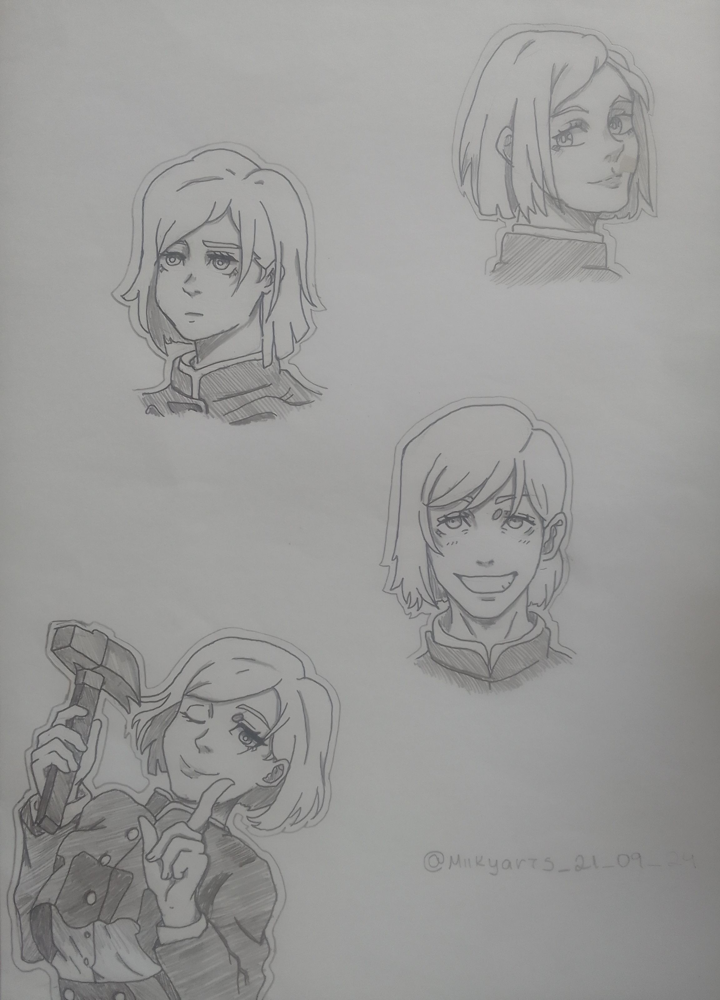
O quarteto quase completo rsrs, eu fiz do Megumi também mas não terminei.

Um dos meus favoritos.
Mais dois desenhos do Studio Ghibli porque amo rsrs.

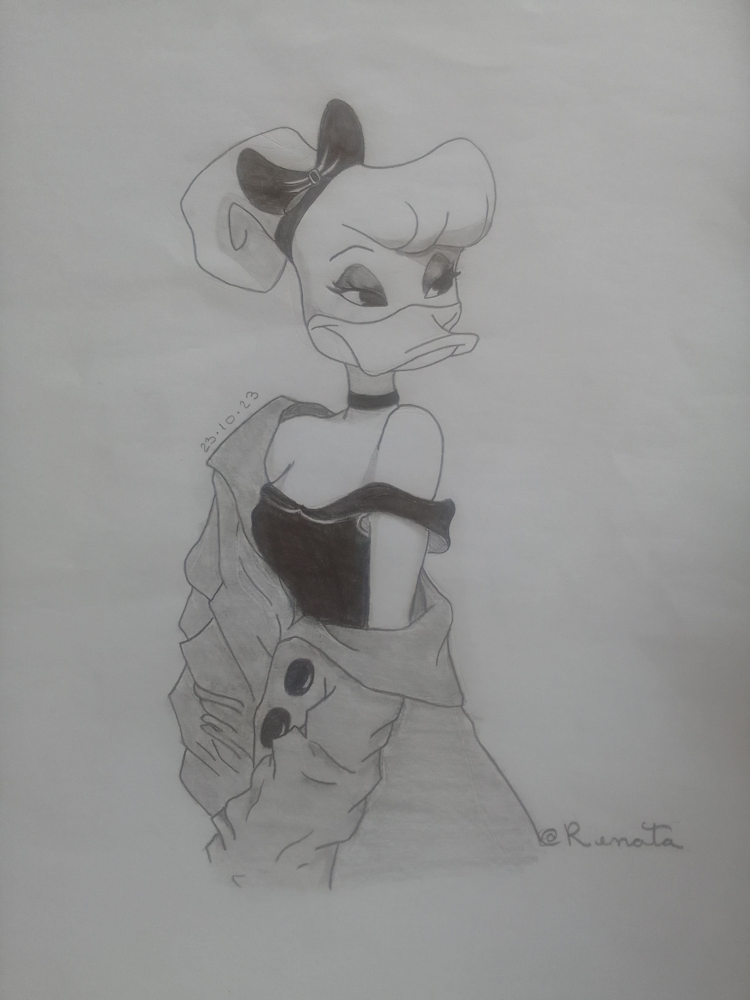
A diferença entre esses dois, é que um eu sombreei com caneta nanquim, e a outra utilizei apenas lápis.

Essa personagem eu desenhei de um clipe de música que a minha professora de filosofia tinha passado na aula. O nome do clipe está na imagem se quiser pesquisar sobre.
E é claro que como todo artista, não pode faltar aqueles desenhos que começamos, não terminamos e nunca vamos terminar kkkk.
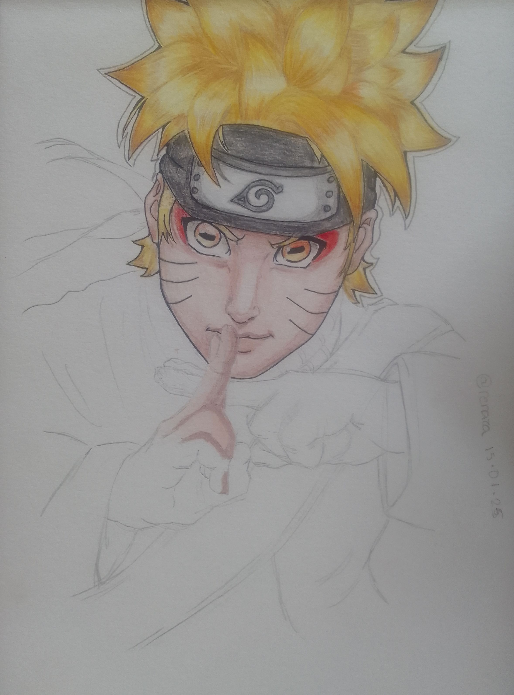
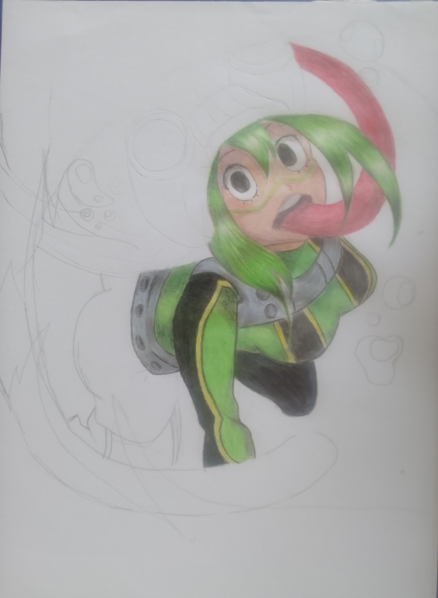
E com isso, sobre os desenhos termino aqui, na próxima pagina, vou falar de alguns animes.